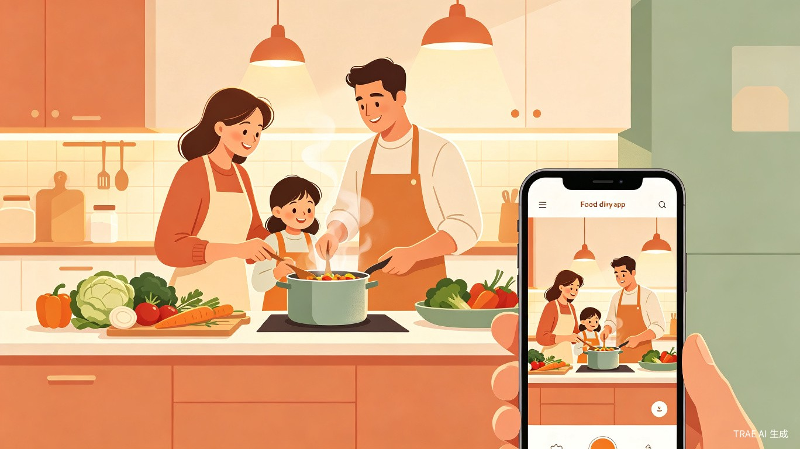
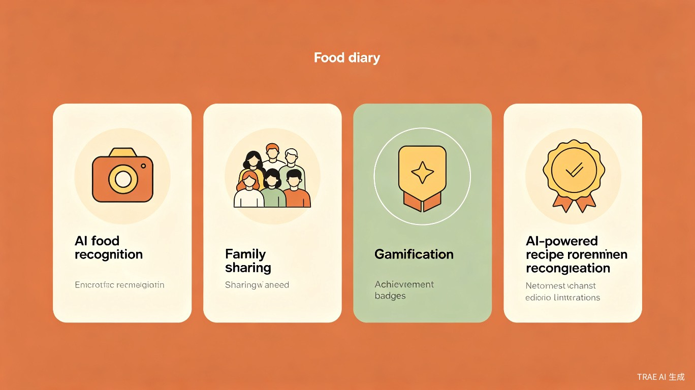

记录家的味道

"味记" 是一款以个人和家庭为主体的美食记录与分享平台。核心理念：每一餐都值得被记住，每一个家庭都有自己的味道。
现有美食类产品全部围绕"菜"和"店"——下厨房解决"这道菜怎么做"，大众点评解决"这家店好不好吃"，小红书解决"这道菜怎么拍"。但没有任何产品解决"我家吃过什么、谁爱吃什么、我们家的味道是什么"。87%的用户看完做菜视频不会立刻动手，收藏夹里的内容下架即失效，家的味道在代际传承中正在快速流失。
每个人心中都有一道"妈妈的味道"，但很少有人系统地记录它。当前的菜谱App是"工具"而非"记忆载体"，餐厅点评是"消费决策"而非"生活记录"。我们相信，美食的本质是记忆，而记忆最好的载体是家庭。当AI技术（图像识别准确率已达98.7%）与家庭场景结合，一个全新的产品品类由此诞生。
一款以"拍照即记录"为核心体验的移动App，集成AI识图、AI美化、菜谱推荐、家庭组协作、游戏化娱乐等功能模块。初期支持iOS/Android双端，后续可扩展为微信小程序降低获客门槛。
25-45岁，负责家庭日常饮食，需要记录和迭代家庭菜谱，占据美食App用户的47.6%。
18-25岁，热爱探店和美食记录，MAU同比增速22.4%，追求游戏化互动和社交分享。
60岁以上，有烹饪习惯但数字化能力弱，2025年占比已达18.3%，需要适老化设计和语音交互。
以家庭为单位使用，需要共享菜谱、协作菜单、饮食打卡同步等家庭场景功能。
| 痛点 | 现状 | 味记的解决方案 |
|---|---|---|
| 收藏≠记录 | 87%看完视频不立刻动手，收藏夹失效 | 拍照即记录，AI自动完成识图+美化+归档 |
| 配方无法迭代 | 无法记录"这次盐少放了半勺" | 配方版本追踪，支持每次调整保存为独立版本 |
| 家庭协作缺失 | 主流App无共享菜谱和协作点餐 | 家庭组共享菜谱库、协作菜单投票、购物清单同步 |
| 跨平台断层 | 小红书/抖音收藏无法结构化 | 一键转存为结构化记录，永久保存 |
| 记录工具薄弱 | 现有产品不支持外部视频结构化 | AI识图+语音识别+OCR全链路自动结构化 |
| 代际传承断裂 | 祖辈菜谱随记忆消失 | 饮食传承簿：菜谱+语音+视频+照片一体化保存 |
中国菜谱App市场2025年规模达48.6亿元，年增速12.3%。但现有产品均聚焦"公开菜谱社区"，"私人/家庭饮食记录"这一细分场景几乎空白。家庭厨房数字化渗透率从29.1%跃升至38.7%，家庭场景需求正在爆发。味记以"家庭厨房OS"定位切入，避开与下厨房（3,270万道菜谱）和大众点评（1.86亿月活）的正面竞争，开辟差异化蓝海赛道。
传统美食记录方式需要多App切换：小红书看灵感→下厨房查菜谱→手机相册存照片→微信发家人。味记将这些分散行为整合为拍照→AI识图→美化→推荐→家庭共享的全链路自动化体验。AI食材识别准确率已达98.7%，DietAI24可实现65种营养素零样本分析，用户从"拍一张照片"到"获得完整美食记录"仅需3秒。
在快节奏的现代生活中，家庭饮食文化正在快速流失。味记致力于用科技守护"家的味道"——让祖辈的菜谱不再失传，让家庭的饮食记忆代代相传，让银发族（60岁以上用户占比已达18.3%）通过适老化设计融入数字生活。此外，通过AI营养分析和慢病适配功能，味记还能帮助家庭实现更健康的饮食管理，应对中国功能饮食市场突破1,500亿元的巨大需求。
"美食的本质是记忆，而记忆最好的载体是家庭。"
AI自动识图、评分标记、美食日记、配方迭代追踪、探店记录、跨平台一键转存。零门槛，拍一张照片完成所有记录。
AI识图（准确率98.7%）、AI美化（200+风格）、菜谱推荐（联网+大模型）、营养分析（65种营养素）、AI贴纸日记。
共享菜谱空间、协作菜单投票、购物清单同步、家庭饮食报告、饮食传承簿、成长纪念册、银发关怀模式。
成就系统（1-50级）、家庭排行榜、美食挑战赛、盲盒菜谱、AI美食短剧、美食地图、年度饮食报告。

"连胜 + 徽章"组合留存率提升达单一元素的 2.3 倍，游戏化机制的组合效应远超单一叠加。
如上图所示，现有竞品在家庭场景维度均处于极低水平（20-30分），而味记以家庭场景为核心差异化定位，同时在AI能力和记录便捷性上全面领先，形成独特的竞争壁垒。
上班族小王每天拍下午餐晚餐，AI自动识图美化，打4星标记"工作日午餐"。睡前翻看AI贴纸日记，摇一摇手机贴纸弹跳互动。周末翻看本周美食报告，发现本周尝了3道新菜。
李妈妈创建"李家厨房"家庭组，发起周末菜单投票。小美投"可乐鸡翅"，李爸爸投"红烧肉"。味记自动生成购物清单，李爸爸按图索骥半小时采购完毕。周日按照"姥姥的红烧肉"配方（附带语音讲解）做出记忆中的味道。
65岁张奶奶有轻度高血压，女儿帮她设置"银发关怀模式"——大字体、语音交互、自动过滤高盐菜谱。张奶奶每天对着手机说"今天做什么"，AI推荐低盐菜谱并语音引导烹饪。女儿在家庭组看到妈妈的饮食记录，心里踏实。
大学生小陈参加"校园美食挑战赛"，每周解锁盲盒菜谱获得限定AI贴纸。他的美食地图已点亮42个点位，在排行榜上排名第3。截图发朋友圈炫耀，带动3个室友也加入了味记。
三个关键趋势交汇：AI技术成熟（食材识别98.7%、DietAI24实现65种营养素分析）、家庭场景爆发（数字化渗透率从29.1%升至38.7%）、游戏化验证（留存提升最高达68%，社交裂变效率翻5倍）。而市场最大空白——"私人/家庭饮食记录"——至今无人填补。味记是踩准了技术、场景、用户三浪叠加的时机。
"十年后，当用户打开味记，看到的不是App，而是自己十年的美食人生。"